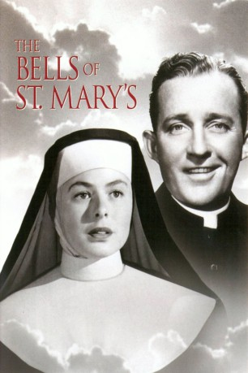
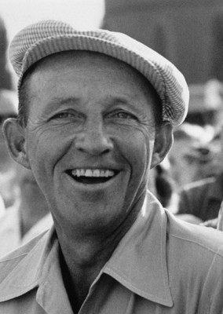
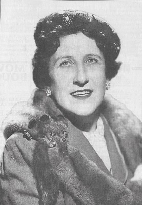

#8310 Die Glocken von St. Marien
Alternativ: The Bells of St. Mary's
 
 IMDB-Wertung: 7.4 / 10
IMDB-Wertung: 7.4 / 10  Metascore: 0
Metascore: 0 
Father O'Malley, the unconventional priest from 'Going My Way', continues his work for the Catholic Church. This time he is sent to St. Mary's, a run-down parochial school on the verge of condemnation. He and Sister Benedict work together in an attempt to save the school, though their differing methods often lead to good-natured disagreements.
Jahr: 1945
Dauer: 125 Minuten
FSK: 6
Land: USA Studio: RKO Radio PicturesTonspuren:
Untertitel: Deutsch,
Auflösung: 1080p (1472x1080) Größe: 10065 MB
Genre: Drama
Regisseur: Leo McCarey
Drehbuch: Dudley Nichols
Soundtrack: Robert Emmett Dolan
Darsteller:
-  Bing Crosby als Father Chuck O'Malley
 Ingrid Bergman als Sister Mary Benedict
Ingrid Bergman als Sister Mary Benedict- Henry Travers als Horace P. Bogardus
- William Gargan als Joe Gallagher - Patsy's father
- Ruth Donnelly als Sister Michael
- Joan Carroll als Patricia 'Patsy' Gallagher
- Martha Sleeper als Mary Gallagher - Patsy's mother
 Rhys Williams als Dr. McKay
Rhys Williams als Dr. McKay- Una O'Connor als Mrs. Breen
- Eva Novak als Nun (uncredited)
- Dewey Robinson als Pedestrian Pulling Bogardus from Under Truck (uncredited)
- John Smith als Choir Member (uncredited)
-  Minerva Urecal als Landlady (uncredited)
- Richard Tyler als Eddie Breen
- Edward Coch Jr. als Baby Jesus (uncredited)
- Aina Constant als Nun (uncredited)
- Jimmy Crane als Luther (uncredited)
- Gwen Crawford als Nun (uncredited)
- Bobby Dolan Jr. als Bobby - Boy Playing Joseph (uncredited)
- Jimmie Dundee als Cabbie (uncredited)
- Bobby Frasco als Tommy Smith (uncredited)
- Matt McHugh als Sporting Goods Salesman (uncredited)
- Peggy McKim als Schoolgirl (uncredited)
- Georgie Nokes als (uncredited)
- Joe Palma als Workman (uncredited)
- Cora Shannon als Elderly Woman (uncredited)
- Pietro Sosso als Blind Man (uncredited)
- Edna May Wonacott als Delphine Ford (uncredited)
Datei: X:\1900-1949\Glocken von St. Marien, Die (1945, FSK6, 1472x1080).mkv seit 20.02.2018
Festplatte: HD 1900-1970
 Es gibt insgesamt 80 Filme in der Gruppe '1900-1949'
Es gibt insgesamt 80 Filme in der Gruppe '1900-1949'